Рисование масок в мировых координатах¶
Внимание
Использование этого подхода потребует использования плагина RYM_Utilities версии 1.26.9 или новее, а так же включения в настройках проекта настроек:
- Support UV From Hit Results
- Enable Virtual Texture Support
Применение¶
Позволяет рисовать в пространстве мировых координат маску вслед за движением объекта. Такую маску можно тут же считывать в любом материале для получения эффектов сохраняющих своё состояние в пространстве. Например, следы от проехавшего автомобиля или приминаемая трава, которая остаётся лежать, когда автомобиль уже проехал.
Инструкция¶
Внимание
Сразу хочу предупредить. На первый взгляд процесс может показаться запутанным и непонятным. Лучше читать не торопясь и повторять вдумчиво. Но, собрав один раз, вы уже будете иметь у себя на вооружении очень полезную вещь.
Подготовка ассетов¶
Для начала нам понадобится целый ряд ассетов, которые нужно создать и правильно настроить:
- Canvas Render Target Texture - это наш холст
- Runtime Virtual Texture - это его отражение в мировых координатах
- Материал "кисти" для рисования по холсту
- Material Parameter Collection - универсальный пересылатель данных от блюпринта рисователя к кисти и, таким образом, к текстуре. Опционален
- Материал холста. Опционален.
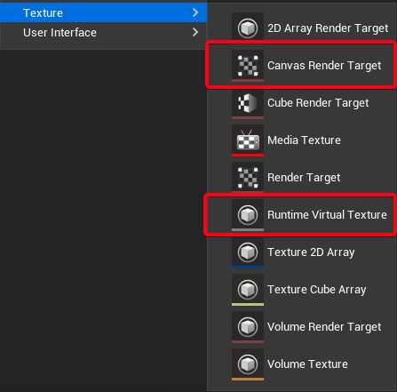
\(\quad\)Если вставить этот текст в строку поиска в панели Content Browser, находясь в папке All, то отобразятся все ассеты имеющие отношение к теме. Так что, по большому счёту, всё, что я здесь упоминаю можно самостоятельно не создавать, а просто скопировать из плагина.
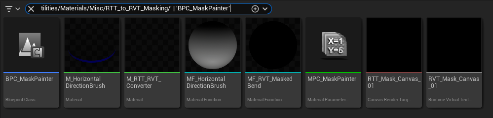
Но в таком случае нужно обязательно переименовать свои копии этих ассетов, чтобы не было задваивания с плагином, которое может в дальнейшем сыграть злую шутку. Поэтому далее я буду описывать работу так, словно у нас изначально ничего нет. Ну кроме блюпринта.
Canvas Render Target¶
Это наш будущий холст. На самом деле "холстов" у нас здесь целых три в каком-то смысле, а кистей две, но обо всём по порядку.
\(\quad\)Этот ассет мы создаём в разрешении не больше чем 2048 на 2048, так как большое разрешение нам здесь вряд ли будет когда либо полезно или нужно. Меньше - лучше.
Runtime Virtual Texture или RVT¶
Это наш второй холст. Он необходим для того, чтобы записанную в Canvas Render Target текстуру информацию можно было легко считать в том месте в мировых координатах, где она была записана. Эдакий конвертер в данном случае.
Материал кисти¶
Он должен быть транслюсентным и изображать некую маску в [0-1] UV координатах, хотя бы на канале opacity, когда как в Emissive можно подавать уже любую информацию. Если никаких наворотов не нужно, то можно просто заткнуть Emissive белым цветом.
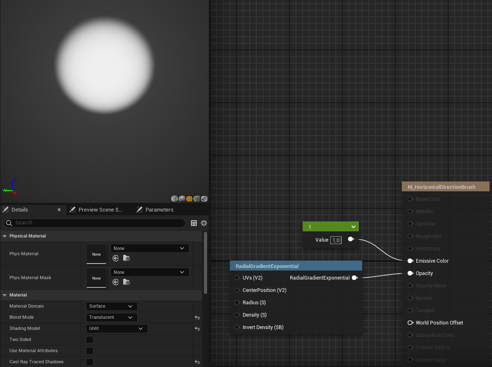
В плагине же поставляется кисть немного посложнее. Она поддерживает запись направления движения объекта и маска у неё настроена определённым образом.
Материал холста¶
На самом деле материал холста несколько опционален. В том смысле, что его не обязательно создавать как что-то отдельное и его функционал может быть встроен в существующий, если ваша сцена вам позволяет.
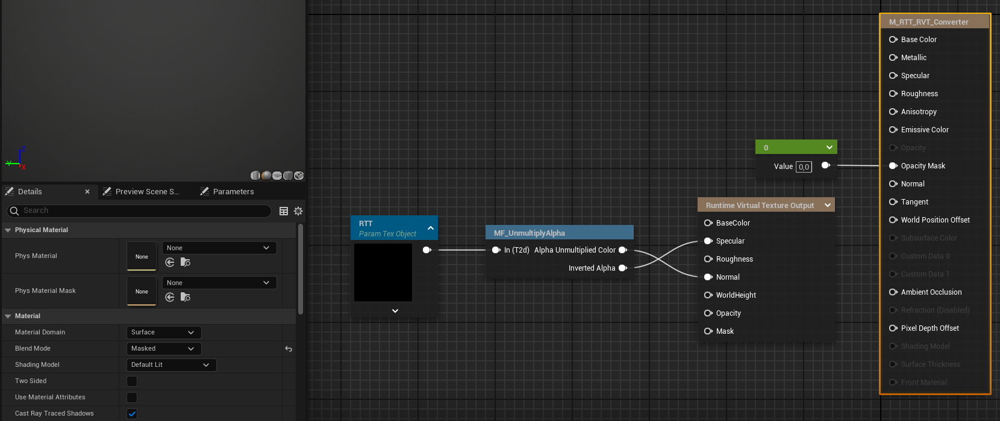
На скриншоте представлен материал поставляемый с плагином - M_RTT_RVT_Converter. Его Blend Mode задан как masked, а в канал opacity подаётся значение 0, чтобы не отображаться в сцене, но всё ещё не считаться скрытым как при активированном свойстве Hidden in game2.
\(\quad\)Особенность материала холста заключается в передаче данных Canvas Render Target текстуры в RVT посредством ноды Runtime Virtual Texture Output. На скриншоте между ними кастомная нода MF_UnmultiplyAlpha. Она используется для инверсии эффекта альфы на цветовой канал, чтобы он приходил из текстуры так, как задумано.
MPC¶
Material Parameter Collection ассет, через который будут передаваться обновляемые данные. Предназначен для более продвинутого использования. Например, для передачи направления движения объекта.
Работа со сценой¶
Третий холст¶
Собственно меш, находящийся в сцене и, в пределах которого мы хотим рисовать маску. В идеале это просто плоскость. Меш-холст должен всегда отображаться в сцене, но может быт полностью прозрачным opacity mask.
\(\quad\)Коллизии этого меша должны быть настроены соответствующим образом, чтобы он реагировал на кисть-блюпринт и ни на что более.
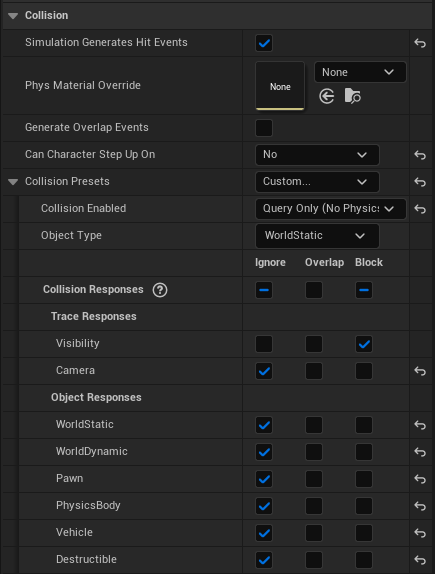
Так же, в категории Virtual Texture нужно указать RVT холст, на который будет наноситься изображение.
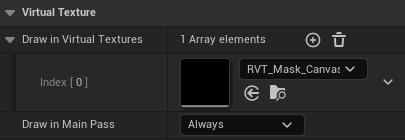
Напарник холста¶
Так же, на каждый такой холст, нам в сцене понадобится специальная сущность под названием Runtime Virtual Texture Volume. Им нужно обрамить объект меш-холста целиком.
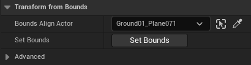
\(\quad\)Для этого у него есть настройка Bounds Align Actor, ей назначаем наш меш-холст и жмём ниже кнопку Set Bounds. Если не сработало или криво, то можно просто протрансформировать наш Volume по location, rotation и scale. Главное чтобы меш-холст был целиком внутри него.
\(\quad\)Завершает настройку RVT Volume подача ему ассета RVT текстуры, в которую будет вестись запись информация внутри этого объекта.
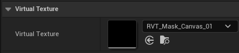
Скрытие холста¶
Так же RVT Volume предлагает альтернативный нулевой прозрачности на материале холста способ скрытия последнего. Свойство Hide Primitives подраздела Advanced раздела Transform from Bounds.
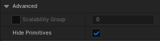
Но для использования этой опции свойство Draw in Main Pass раздела Virtual Texture нашего меш-холста должно быть назначено на From Virtual Texture.
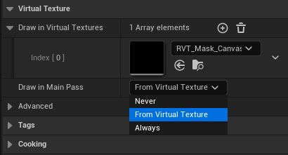
Оно запрещает объекту рендериться3, если в сцену помещён RVT Volume с соответствующей RVT текстурой и активным свойством Hide Primitives. Never означает, что объект не будет рендериться ни при каких условиях и не зависит от свойства Hide Primitives. Когда как свойство Always наоборот - заставляет объект рендериться вне зависимости от выше обозначенных условий. Холст с настройкой Always может так же и сам считывать RVT текстуру.
Добавляем блюпринт-кисть¶
BPC_MaskPainter - это блюпринт-инструмент, представляющий собой особый scene компонент. В точке своего прикрепления к объекту он осуществляет line trace проверку на наличие под или над ним объекта-холста. Если он его находит, то в этой точке рисует на Canvas Render Target текстуре нашим материалом-кистью. В него заранее имплементирована возможность работы с MPC для записи кастомных данных или вектора направления движения.
Добавляется простым перетаскиванием в иерархию компонентов объекта.
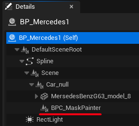
Пример расположения в иерархии другого актора. Компонент добавлен экземпляру блюпринта на уровне - "снаружи"
Работа с блюпринтом¶
Все параметры этого компонента можно настроить как на экземпляре внутри родительского блюпринта, так и на добавленном "снаружи" - на уровне
Параметры¶
Setup¶
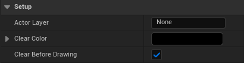
- Actor Layer - название слоя, акторы которого будут отфильтрованы из проверки инструмента, чтобы его "выстрелы" проходили только по Canvas Object1
- Clear Color - цвет, на который сбрасывается Canvas Render Target
- Clear Before Drawing ✅ - активация сброса Canvas Render Target текстуры до Clear Color цвета перед началом рисования
Brush Properties¶
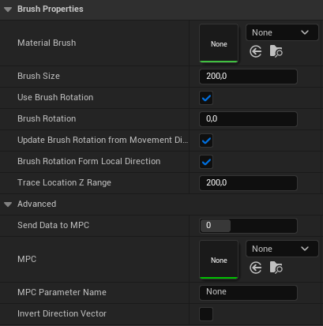
- Material Brush - Материал кисти, используемый для рисования на Canvas Render Target текстуре
- Brush Size - Размер кисти
- Use Brush Rotation ✅ - активация использования поворота кисти
- Brush Rotation - поворот кисти
- Update Brush Rotation ✅ - активация обновления поворота кисти во время рисования
- Brush Rotation From Local Direction ✅ - переключение способа вычисления вращения кисти от движения на вектор направления относительный родительского актора
- Trace Location Z Range - Длина луча ищущего холст от центра самого компонента BPC_MaskPainter
- Send Data to MPC - переключает поведение отправки данных в MPC. Подробнее в подсказке при наведении мышью
- MPC - Material Parameter Collection ассет, используемый для передачи данных
- MPC Parameter Name - название параметра MPC, который будет перезаписываться
- Invert Direction Vector ✅ - инверсия вектора направления
Canvas Properties¶
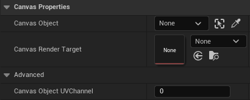
- Canvas Object - объект служащий холстом в сцене
- Canvas Render Target - соответствующая RTT текстура
- Canvas Object UV Channel - UV канал холста, используемый для рисования на Canvas Render Target текстуре.
Animation¶
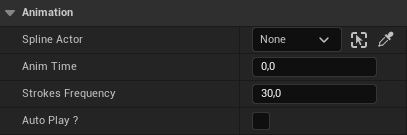
- Strokes Frequency - частота нанесения мазков на текстуру в секунду. Больше - плавнее, но дороже, так что не всегда лучше.
- Spline Actor - Актор со spline компонентом, по которому может двигаться сам BPC_MaskPainter или его родитель.
- AnimTime - Время рисования в секундах.
- Autoplay? ✅ - Активация автоматического старта рисования с началом игры
Инициализация¶
Произвести инициализацию блюпринта, то есть последнюю подготовку его к использованию, можно в управляющем (или родительском) блюпринте, с помощью функции Init. Любой её параметр можно оставить пустым и тогда, он не будет заменять собой уже настроенный. Эта функция позволяет произвести донастройку компонента и перевести его в "боевой" режим, если всё настроено правильно.
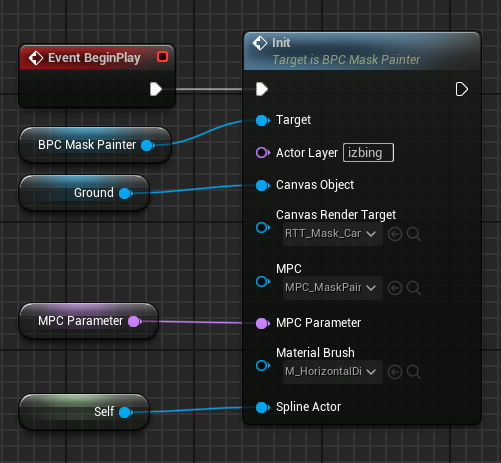
Рисование¶
После настройки параметров компонента можно перейти к активации в анимации. Для этого достаточно вызвать функцию Play From Start (или Play) из управляющего (или родительского) блюпринта.
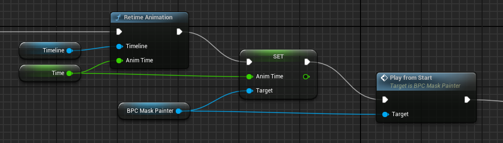
На этом скриншоте так же задаётся время анимации для компонента то же, что и у родительского блюпринта для синхронизации с движением объекта, к которому прикреплён компонент
По окончании анимации управляющего (или родительского) блюпринтам, можно так же принудительно завершить рисование вызовом функции Stop у компонента.
Считывание маски¶
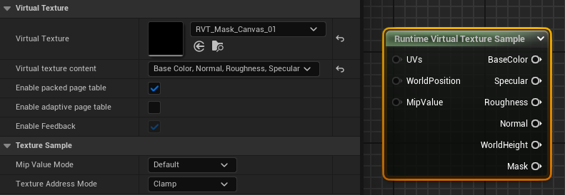
Считывание изображения в материале, который рассчитывает использовать результат рисования, происходит посредством ноды Runtime Virtual Texture Sample. Настройки должны быть указаны соответственно тому, как настроен сам ассет RVT текстуры.
Используя в связке с функцией MF_RVT_MaskedBend (поставляется с плагином), можно, например, добиться эффекта приминаемой от движения объекта травы, которая сохранит своё примятое состояние, когда объект проедет мимо.
-
Удалять его из слоя не нужно, он сам себя вычитает из выборки. ↩
-
Скрыть меш-холст можно и другим способом: с этим поможет свойство hide primitives у Runtime Virtual Texture Volume объекта ↩
-
Подразумевается рендеринг в Main Pass. Это основной этап рендеринга в Unreal Engine, он включает два основных метода: отложенный рендеринг (deferred) и прямой (forward) рендеринг. Отложенный рендеринг используется в движке по умолчанию. Он разделяет геометрию сцены и расчеты освещения, что позволяет эффективно обрабатывать сложные сцены с множеством источников света. Прямой рендеринг выполняет все расчеты в один проход, что подходит для проектов с простыми освещением и высокой производительностью. Подробнее о рендер-пассах Unreal Engine можно почитать здесь ↩